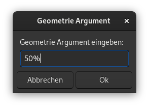

Ein Nautilus-Skript ist ein ausführbares Shell-Skript, das in einem speziellen Skripte-Verzeichnis abgelegt wird, sodass die grafische Nautilus-Shell es finden kann. Auf diese Weise kann man die Funktionalität des Dateibrowsers erweitern, um so gut wie alles zu tun.
Skripte werden aufgerufen, indem man eine Datei oder eine Gruppe von Dateien auswählt und mit der rechten Maustaste klickt, um das Kontextmenü aufzurufen. Eine der Optionen in diesem Menü ist das Untermenü Skripte, mit dem man ein Skript auswählen kann, das auf die ausgewählten Dateien angewendet werden soll.

Das Untermenü Skripte erscheint nur, wenn mindestens ein Skript im Skripte-Verzeichnis liegt.
Damit ein Skript von Nautilus gefunden werden kann, muss es sich im Skripte-Verzeichnis ~/.local/share/nautilus/scripts/ befinden. Dieser Ordner befindet sich im Home-Verzeichnis, ist aber standardmässig versteckt. Mit der Tastenkombination Strg+H können versteckte Dateien und Ordner in Nautilus angezeigt werden.
Damit Skripte nutzbar sind, müssen sie als ausführbar gekennzeichnet werden. Um ein Skript ausführbar zu machen, klickt man entweder mit der rechten Maustaste auf ein Skript und wählt Eigenschaften → Zugriffsrechte → Datei als Programm ausführen oder man verwendet den folgenden Befehl im Terminal:
chmod +x name-des-skriptImmer wenn ein Skript aufgerufen wird, setzt Nautilus automatisch eine Handvoll Umgebungsvariablen, die man in den Skripten verwenden kann.
NAUTILUS_SCRIPT_SELECTED_FILE_PATHS Zeilenumbruch getrennte Pfade für ausgewählte Dateien (nur wenn lokal)
NAUTILUS_SCRIPT_SELECTED_URIS Zeilenumbruch getrennte URIs für ausgewählte Dateien
NAUTILUS_SCRIPT_CURRENT_URI aktueller Speicherort
NAUTILUS_SCRIPT_WINDOW_GEOMETRY Position und Grösse des aktuellen Fensters
Um Markdown Dateien in HTML zu konvertieren benutze ich pandoc.
#!/bin/bash
while [ $# -gt 0 ]; do
pandoc "$1" -o "$1"".html"
shift
doneWenn das Skript in Nautilus ausgeführt wird, wird im selben Verzeichnis eine HTML Datei erstellt.
Um eine Bilddatei zu skalieren verwende ich den Befehl convert mit dem Schalter -resize von imagemagick. Der Schalter -resize benötigt ein geometrie Argument. Erwähnenswert sind: * scale% Höhe und Breite werden mit angegebenem Prozentsatz skaliert * width Breite vorgegeben, Höhe wird automatisch berechnet, um das Seitenverhältnis zu erhalten * widthxheight Maximale Werte von Höhe und Breite, Seitenverhältnis wird beibehalten
Um das Skript vielseitig zu verwenden, habe ich eine grafische Eingabe mit Zenity erstellt, um das geometrie Argument zu übergeben.

#!/bin/bash
SIZE=$(zenity --entry --title="Geometrie Argument" --text="Geometrie Argument eingeben:")
while [ $# -gt 0 ]; do
convert "$1" -resize $SIZE "$1"
shift
doneWeitere Beispiele sind im Projekt auf GitHub https://github.com/MrReSc/NautilusScripts verfügbar.